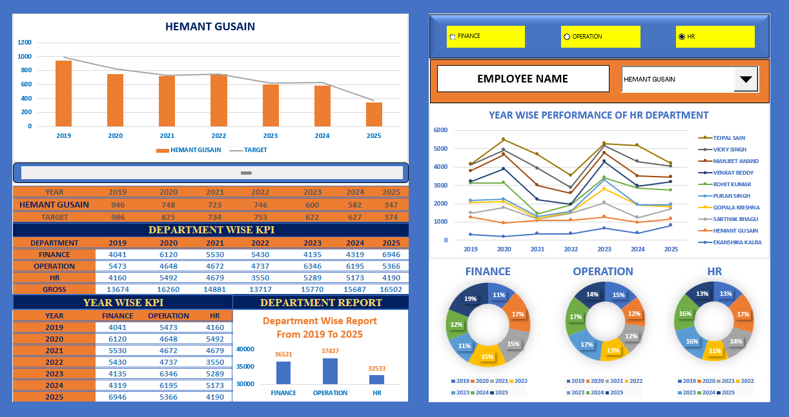
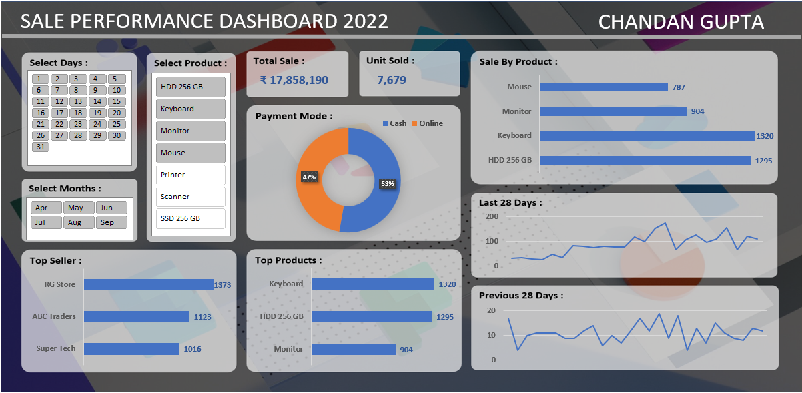
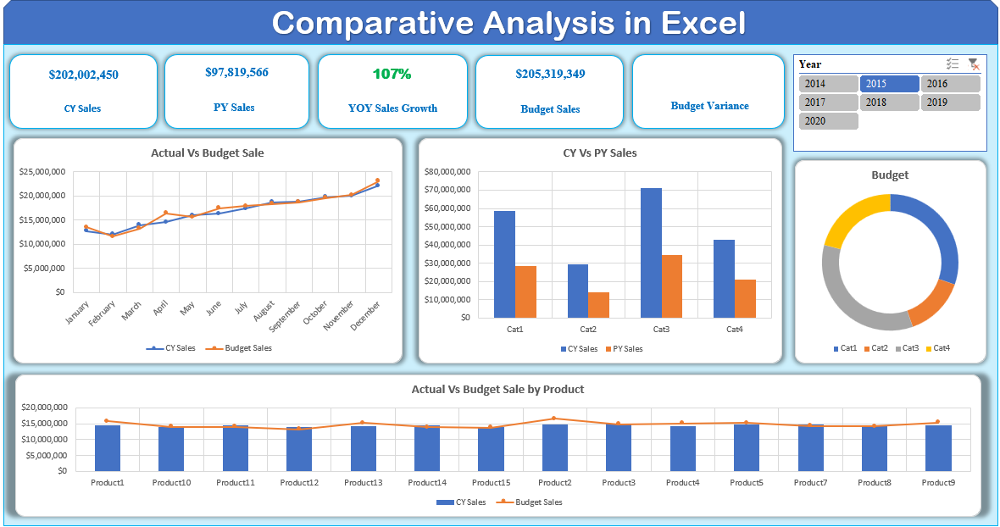
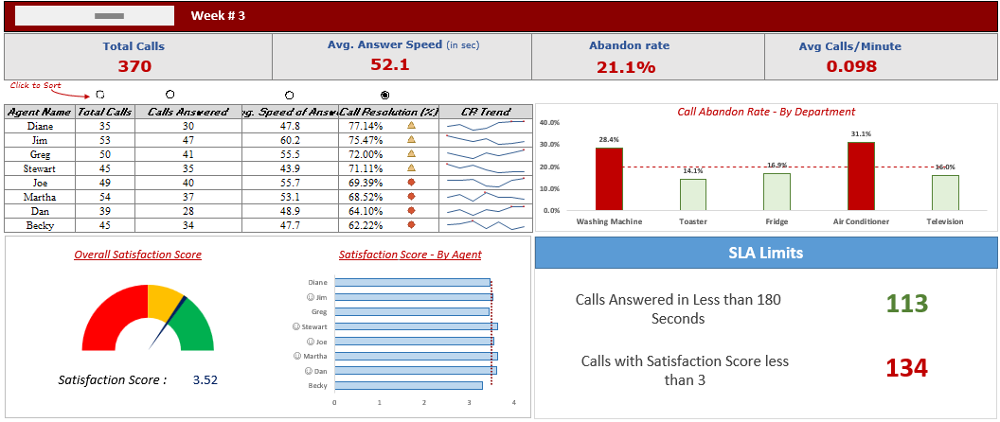
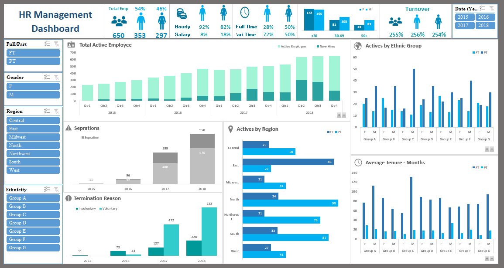
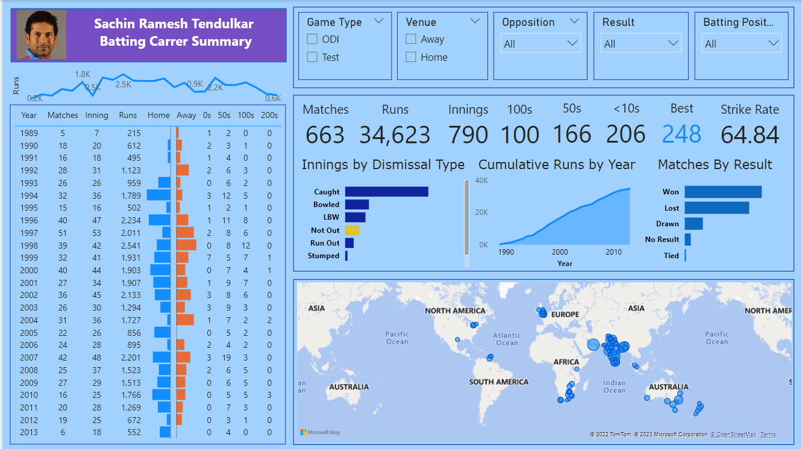
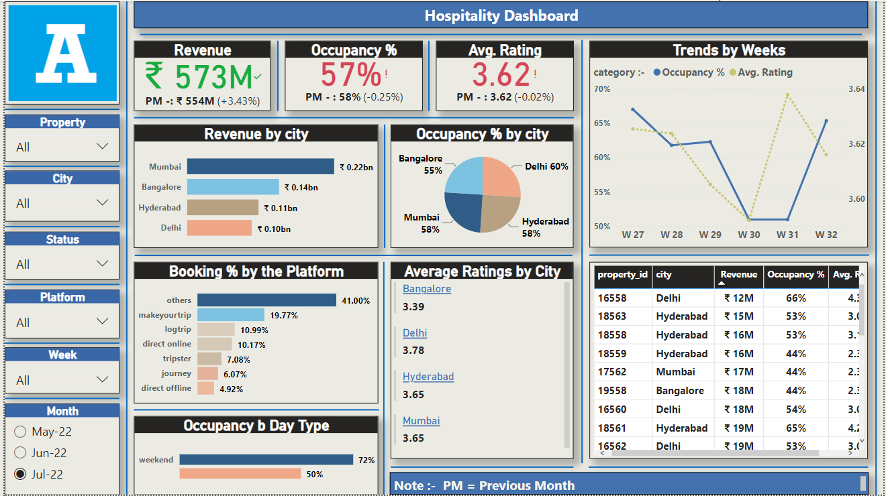
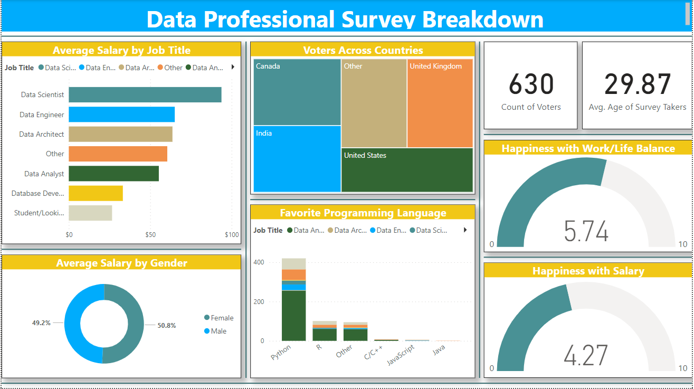
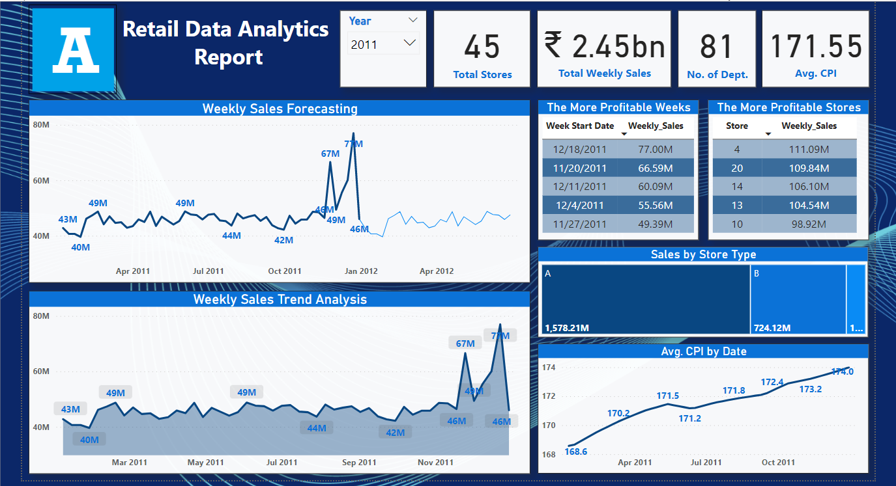
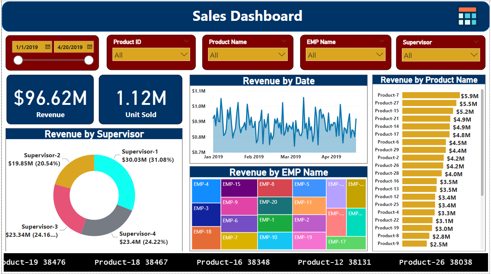

In This Project, I made a KPI Dashboard for an Organisation which has 3
Departments are 'Finance', 'Operation' and 'HR'. here, I made this Dashboard
to Show Employees Yearly Sales and Department wise Performance across the Years.


In this Sales Dashboard, I Analysed Performance of Various Sellers in a finacial year and their Month-on-Month Sales and Revenue, Sales by Products, Top Selling Products, Payment Methods and Top Sellers.

In this Project, I have done the Comparative Analysis for Sales of an Organisation where i made a dashboard for the Actual v/s Budgeted Sales, YOY Sales growth and Sales across various Products.

In this Project, I have done the Data Analysis of a Call Center Organisation Dataset. here, i created Weekly Calculated feilds like Total Calls, Abandoned rate, SLA Limits and showed all Employees Performance in Table and lastly make Efffective Visualization of all Employees Performance.

In this Project, I have Created a Dashboard for an HR Department where i analysed the data related to all the Employees of the Organisation and their tenure in this Organisation, reason for termination,sepration, average tenure and activies etc.
In this Project, I made a BI Dashoard on Sachin's Career Batting Performances in Test and One Day Internationals and coverd every aspects like his Hundreds, Ducks, Runs Scored Every Year(Home and Away) Dismissal types and Runs Scored at every venue across the Globe. I Collected his Batting Data from Kaggle.


In this Project, I Analysed the Data of Metro Cities of India and made a Hospitality Dashboard on their total Revenue, Occupancy %, Ratings and Weekly Trends of bookings in these Cities.

In this Project, I Analysed the Data of a survey which was conducted on Data Professionals in various countries. I Analysed Average Salaries across different Data Jobs, Happiness with salary, Happiness with work life balance and gender wise salary distribution.

In this Project, I have done the Analysis and Forcasting of a Retail Supply Chain Store, their Weekly Sales Performance, Top Performing Weeks and Forcasting based on Previous Sales Data.

In this Project, I made a Dashboard for Sales Performance of an Organisation and i had done the Analysis on all Products and Employees and find Patterns(Structure) in the Revenue of Organisation.
In this Project, I Created Tables for the Billing Database like Subscription, Customer_Details, Transaction_Details and many more. I have Created Stored Procedures and User Defined Functions here to Generate Bills and Customer Details and lastly a Trigger for payment of Old Bills. I Used all SQL Concepts here like TSQL, DDL, DML and DQL.

In this Project, I Created Tables for my Student Database like Student, Course, Teacher, Users etc. Then after I perform Operations like RETRIEVING DATA USING SELECT, RESTRICTIONS AND SORTING, AGGREGATE AND GROUPING, SINGLE ROW FUNCTION, JOINS and SUBQUERRY to get the Desired Output.

In this Project, I have worked on all SQL Commands like DQL, DML, DDL, DCL and TSQL also. here, I made Tables, Views, Stored Procedures, USer Defined Functions, Error handling using UDFs, Triggers and User Login Password.

In this Project, I have done the Analysis on Covid Dataset using Python libraries like Pnadas, Numpy and Matplotlib. First i Analysed the dataset and then perform Visualization in Python to show the Related Trends of Covid-19.
In this Project, I have done the Data Analysis of a Call Center Organisation using Python. firstly, I perform ETL on the Dataset and then do the Application part in which i extract particular data in the form of DataFrame and lastly Visualization Part.